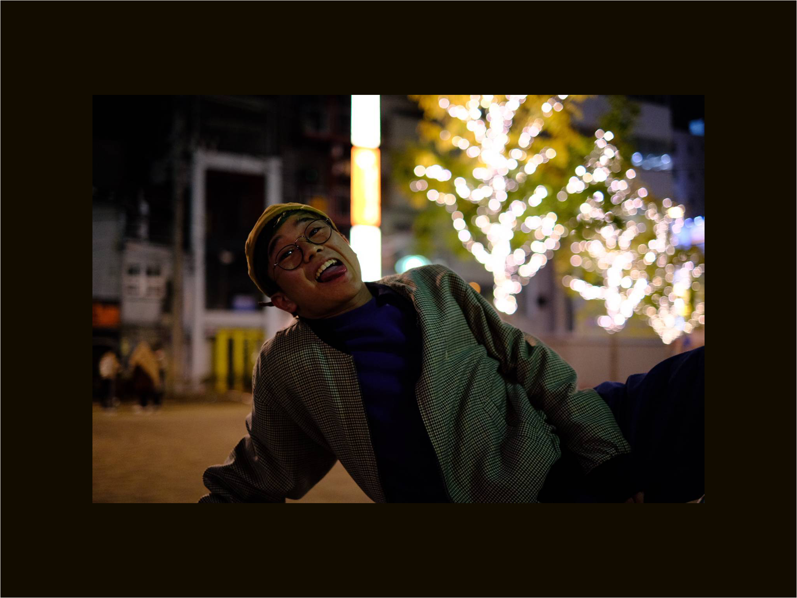
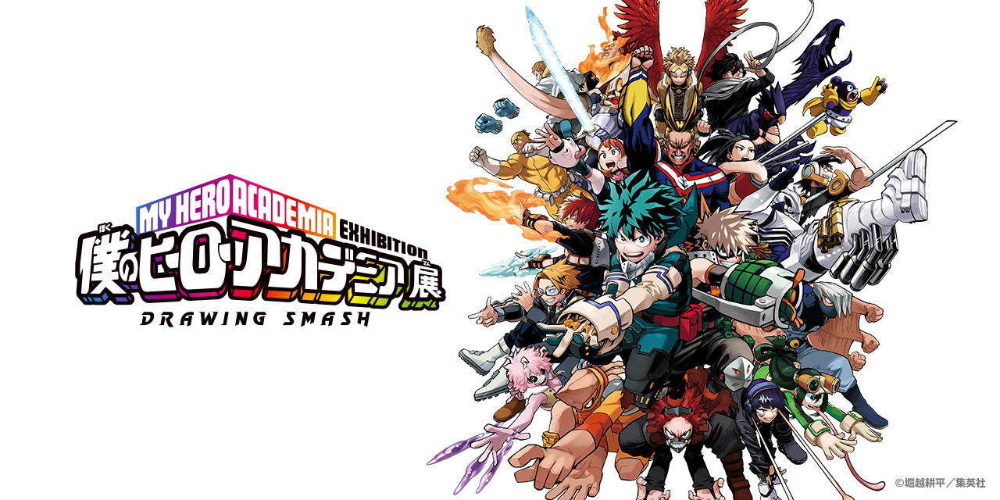
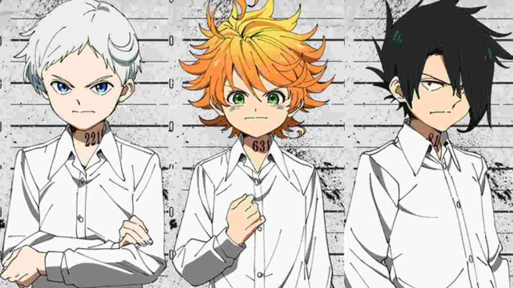
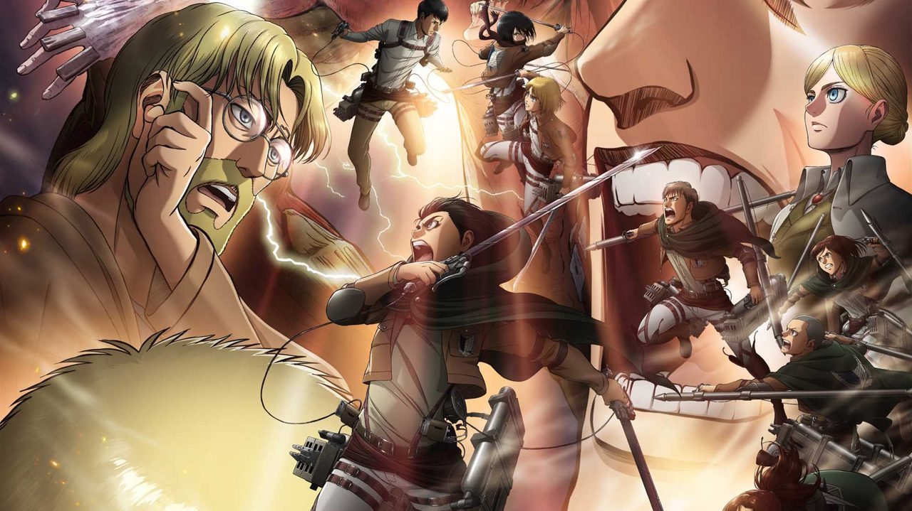
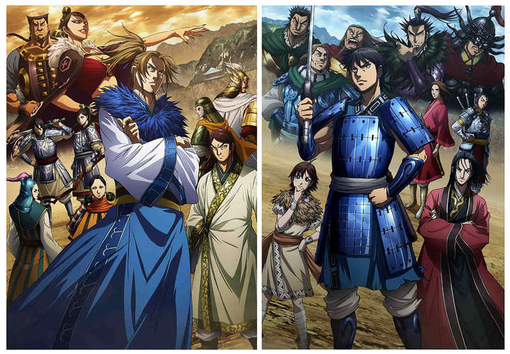
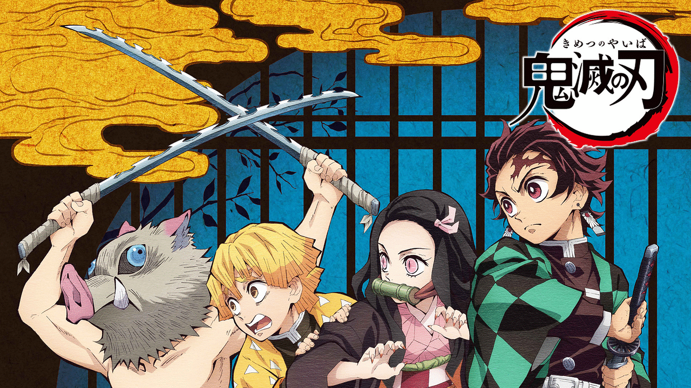
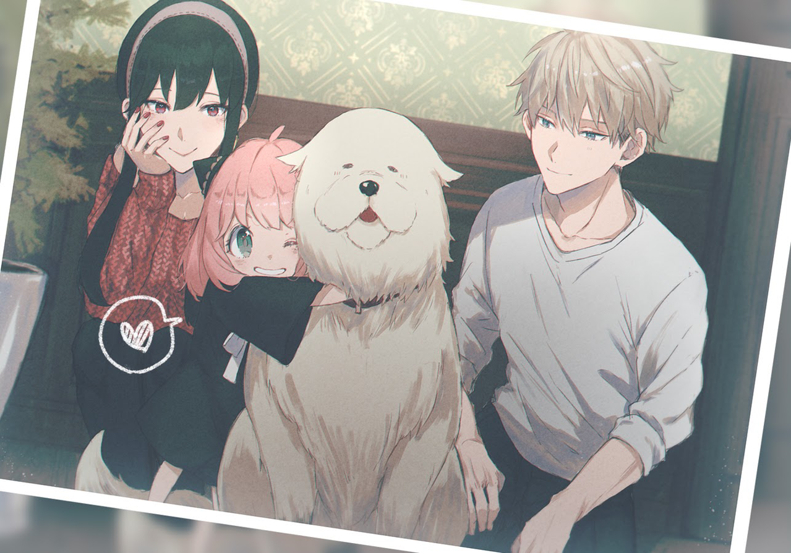
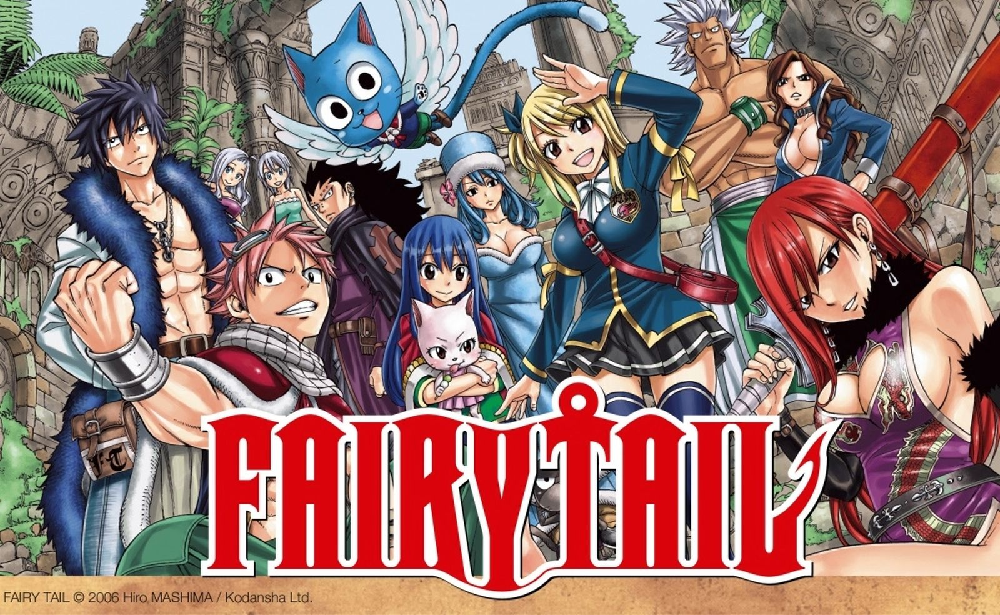
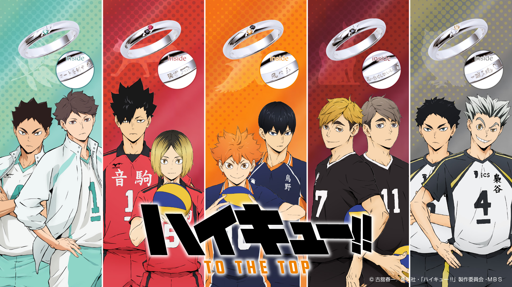
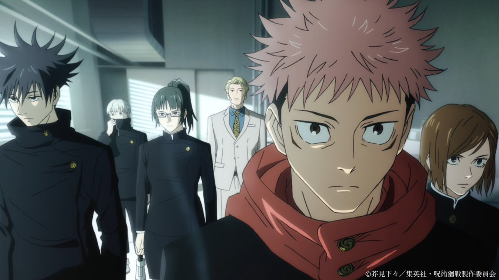

 おすすめ漫画 Go Back  僕のヒーローアカデミア 主人公、緑谷出久(みどりや いずく)が最高のヒーローを目指して、仲間と共に成長していき、悪の敵「ヴィラン連合」と戦っていく。超パワフルで個性豊かなヒーロー達が次々に登場し、ジャンプの三大原則『友情・努力・勝利』が詰まりまくった、王道的なバトル少年漫画! 少年ジャンプ  約束のネバーランド 孤児院グレイス＝フィールドハウスで暮らす子供たちは、母親代わりのイザベラの元、幸せな日々を過ごしていた。孤児のエマ、レイ、ノーマンも里親に引きとられる日を夢見て毎日を過ごしていた。そんなある日、エマとノーマンは孤児院に隠された秘密を知り…!? 少年ジャンプ  進撃の巨人 巨人がはびこる世界、人々はその脅威から身を守るため巨大な壁に囲まれた街での生活を余儀なくされていました。ある日、巨人の襲撃にあいエレンの母が巨人に食べられてしまう。母を救えなかった自分の無力さに打ちひしがれたエレンはミカサとともに訓練兵団に入団し、巨人を駆逐していく。 少年マガジン  キングダム 時は紀元前。500年の大戦争時代にある中華西方の国・秦。奴隷同然の生活を送る少年、信と漂は、武功で名をあげるべく日夜剣術の修行に励んでいた。そんなある日、王に瓜二つの容姿を見込まれ、漂は影武者として王宮に召し抱えられるが、王の実弟によるクーデターが勃発し・・・。 ヤングジャンプ  鬼滅の刃 平穏につつましく大正時代を生きる一家の長男・竈門炭治郎が炭売りから家に戻ると家族は「鬼」に惨殺され、唯一の生き残りである妹・禰豆子は鬼となっていました。 妹を人間に戻すため、そして一家の仇を討つため、心優しい炭治郎が鬼狩りの道へと進んでいく。 少年ジャンプ  SPY×FAMILY 舞台は東西で国が分かれたヨーロッパ風のとある地域。格式高いイーデン校に潜入するため、〈黄昏〉は養子縁組と偽装結婚で偽りの家族を手に入れます。しかし、妻の正体はプロの殺し屋、娘はエスパー。それぞれの正体は秘密のまま、偽りの家族の絆は深まっていき・・・。 少年ジャンプ+  フェアリーテイル 世界中に幾多も存在する魔導士ギルド。そこは、魔導士達に仕事の仲介などをする組合組織である。立派な魔導士を目指す少女ルーシィは、ひょんなことから火を食べ火を吐き火を纏う滅竜魔導士（ドラゴンスレイヤー）ナツと喋る青い猫ハッピーと出会い、彼らの所属するギルド「妖精の尻尾（フェアリーテイル）」に加入する。ルーシィはナツとハッピーとチームを組んで様々な依頼に挑んでいく。 少年マガジン  ハイキュー ある日偶然春高バレーのテレビ中継を見かけた小柄な少年・日向翔陽は、「小さな巨人」と呼ばれ躍動する烏野高校のエースに心奪われバレーボールを始める。だが、入学した中学校のバレー環境に恵まれず、上達の機を逸していた。やっとこさで集めたメンツで最初で最後の公式戦に望むも天才セッター・影山飛雄擁する強豪・北川第一中に惨敗。影山にリベンジを果たすべく烏野高校に入部したが・・・。 少年ジャンプ  呪術廻戦 2016年11月、乙骨憂太には、婚約者の少女である特級過呪怨霊・祈本里香が取り憑いていた。同級生から執拗な嫌がらせを受けていた乙骨は、里香が彼らに重症を負わせたことで呪術師に拘束され、死刑を宣告される。しかし強大すぎた里香の力に術師側は尻込み、かつ呪術高専の教師・五条悟の勧めもあったことから、乙骨は2017年に東京都立呪術高等専門学校に転校することになるが・・・。 少年ジャンプ